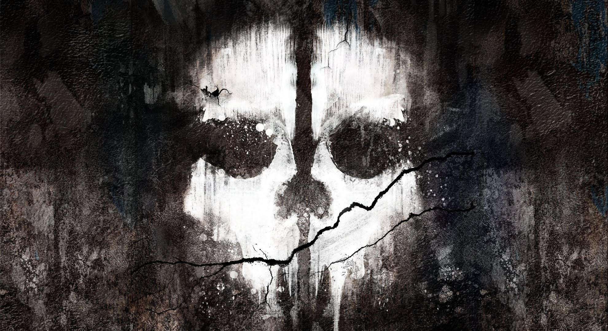

There was a man, and he said that we should not fear death, for it comes to all of us. He said we should fear life, for it is what brings you to the horrors of the world, and life is the thing that ensures death. Because life ensures death, when you fear death, you fear life. For those who believe in afterlife, death should not be feared, for it is only the beginning. For those who do not, they fear death, because for them death is the end. What we believe changes us, so you must believe wisely. On the battlefield, he would rather be with a man who believes in an afterlife, so he would never flee, he would fight to the end, and he would choose wisely, knowing karma would impact him in the next life. Believe wisely, he said, for it changes your view on the world.
I saw the man must be religous, for he praises those who believe in the life after death, although I see his view, I am not sure what I believe yet. Althouth I would rather the man who charges forwards into danger by my side rather then the man who flees to try to sacrifice the state he fights for to save his self.
Moooooooooooooo
Barn Owl
Trump's Hair Stolen! CNN makes fun to cover up Wikileak's new attack on Hillary!